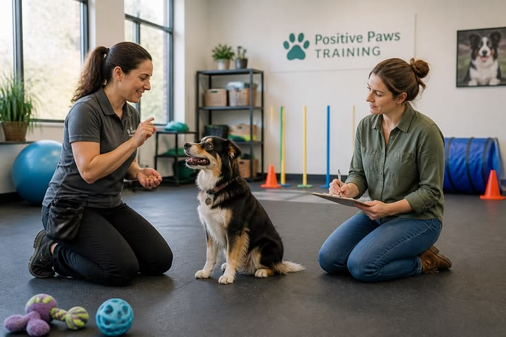
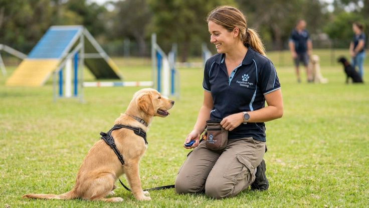

Canine Obedience Training
R1 500 · 6 Months
Durban's practical pet care and training academy – for pet owners, aspiring professionals, and animal lovers.
Browse Courses

R1 500 · 6 Months

R1 500 · 6 Months

R750 · 6 Weeks

R750 · 6 Weeks
“Practical, hands-on training that actually prepared me for work.”
— Past learner
“My dog's behaviour completely changed after this course.”
— Pet owner
“Started my own dog-walking business right after finishing.”
— Graduate